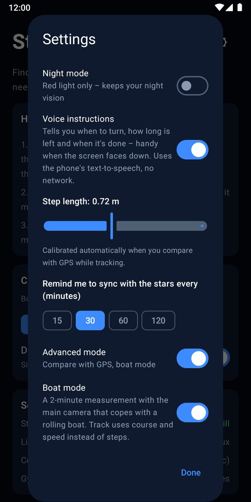
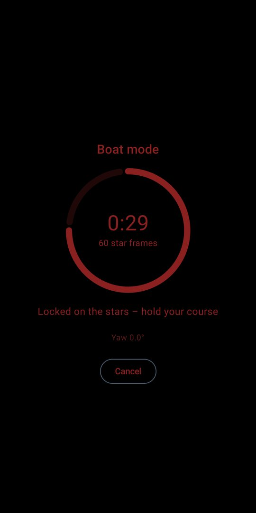
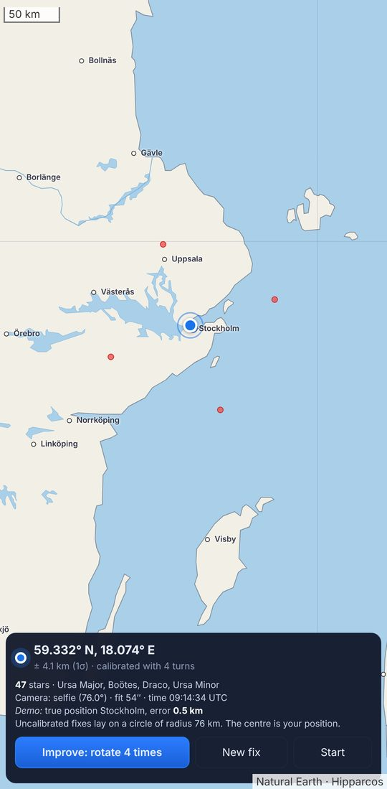
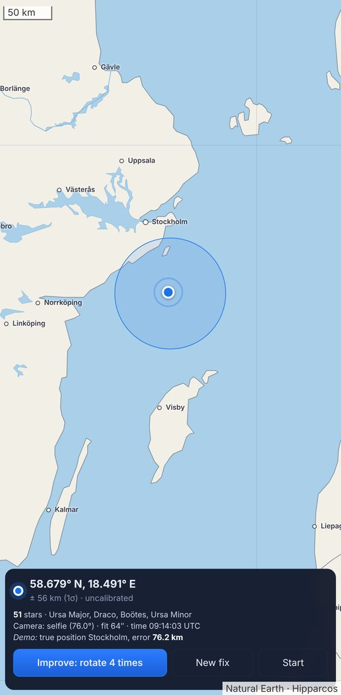
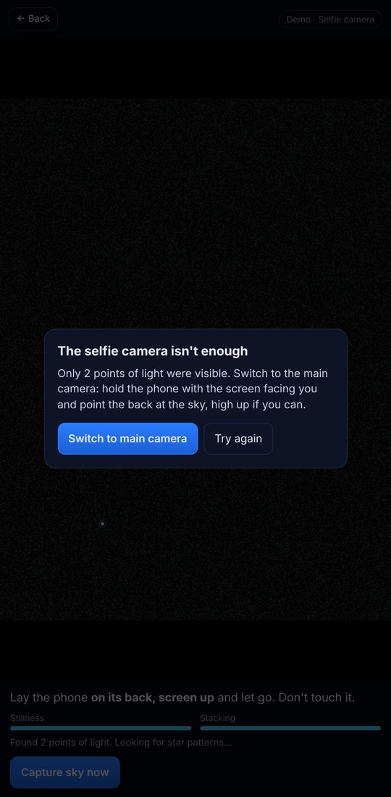

How it worksSå fungerar det
A star fix needs three things: the sky, the direction of "up", and the time. Your phone already has all three.En stjärnfix behöver tre saker: himlen, riktningen uppåt och klockan. Telefonen har redan alla tre.
-
Lay it downLägg ner den
Screen up, on the ground. The accelerometer finds the zenith and the gyro waits until the phone is still.Skärmen uppåt, på marken. Accelerometern hittar zenit och gyrot väntar tills telefonen ligger still.
-
Lock on sky
60 frames are stacked and the stars are identified with no prior pointing. Constellations light up when it locks.60 bilder staplas och stjärnorna känns igen utan att appen vet åt vilket håll den pekar. Stjärnbilderna lyser upp när den låser.
-
Blue dotBlå prick
Latitude and longitude on an offline map, with an uncertainty circle and a compass cone. Track keeps dead-reckoning when clouds roll in.Latitud och longitud på en offlinekarta, med osäkerhetscirkel och kompasskon. Track räknar vidare när molnen kommer.
Kilometres, not metresKilometer, inte meter
Starways is a backup and a cross-check against jammed or spoofed GPS. It is not a GPS replacement, and we don't claim it does.Starways är en reserv och en kontroll mot störd eller förfalskad GPS. Den ersätter inte GPS, och det påstår vi inte heller.
Needs a clear, dark sky. Light summer nights in the far north will not work. The beta test is how we find out what real phones and real skies give.Kräver klar och mörk himmel. Ljusa sommarnätter långt norrut fungerar inte. Betatestet är hur vi tar reda på vad riktiga telefoner och riktiga himlar ger.
Settings for the fieldInställningar för fältet
Everything is in one Settings dialog, opened from the gear on the start screen and the map. Advanced mode is off by default, so the app stays simple until you need more.Allt finns i en inställningsdialog som öppnas från kugghjulet på startskärmen och kartan. Avancerat läge är avstängt från början, så appen är enkel tills du behöver mer.
- Night mode. Black and deep red at low brightness, so you keep your night vision.Nattläge. Svart och djuprött med låg ljusstyrka, så att du behåller mörkerseendet.
- Track. Dead reckoning between star fixes, with your step length and a reminder to sync with the stars every 15 to 120 minutes.Spåra. Död räkning mellan stjärnfixarna, med din steglängd och en påminnelse om stjärnsynk var 15:e till 120:e minut.
- Advanced mode. Adds Compare GPS on the map, so you can check a star fix against satellite navigation and spot jamming or spoofing. GPS comparisons also calibrate your step length.Avancerat läge. Lägger till Jämför GPS på kartan, så att du kan kontrollera stjärnfixen mot satellitnavigeringen och upptäcka störning eller förfalskning. Jämförelserna kalibrerar också din steglängd.
- Boat mode (in Advanced mode). A 2-minute measurement with the main camera that copes with a rolling deck. It follows the stars frame by frame and warns you if the boat turns. At sea, Track uses compass course and the speed you enter in knots instead of steps.Båtläge (i Avancerat läge). En mätning på 2 minuter med huvudkameran som klarar sjögång. Den följer stjärnorna bild för bild och varnar om båten girar. Till sjöss använder Spåra kompasskursen och farten du anger i knop i stället för steg.


Boat mode is experimental. It has been tested in simulation, not yet on a real boat. Hold a steady course and speed while it measures, and calibrate the sensors in harbour or on land first.Båtläget är experimentellt. Det är testat i simulering men ännu inte på en riktig båt. Håll stadig kurs och fart medan det mäter, och kalibrera sensorerna i hamn eller på land först.
Private by constructionPrivat från grunden
- No internet permission in the app. It cannot send anything anywhere.Ingen internetbehörighet i appen. Den kan inte skicka något någonstans.
- No ads, no analytics, no account.Ingen reklam, ingen analys, inget konto.
- Star catalogue and map are on the phone: 1,627 Hipparcos stars and Natural Earth.Stjärnkatalog och karta finns i telefonen: 1 627 Hipparcos-stjärnor och Natural Earth.
- Swedish and English. Red night mode keeps your dark adaptation.Svenska och engelska. Rött nattläge bevarar mörkerseendet.
- 1 €, once. No subscription.1 €, en gång. Ingen prenumeration.
Beta testers get it free, for goodBetatestare får den gratis, för alltid
The first test runs for at least 14 days on Google Play. Everyone who takes part gets the full app on their Google account at no cost, also after launch.Det första testet pågår i minst 14 dagar på Google Play. Alla som är med får hela appen på sitt Google-konto utan kostnad, även efter lanseringen.
What we ask: try a few star fixes on clear nights and tell us honestly how it went.Det vi ber om: gör några stjärnfixar klara nätter och berätta ärligt hur det gick.
- Sign up with your Google account. We email you a personal code that makes the app free, with the steps below.Anmäl dig med ditt Google-konto. Du får ett mejl med en personlig kod som gör appen gratis, och stegen nedan.
Sign up for the betaAnmäl dig till betan - Join the tester group:Gå med i testargruppen: groups.google.com/g/starways-beta
- Join the test on Google Play with the same account:Gå med i testet på Google Play med samma konto: play.google.com/apps/testing/se.lte.starways
- Redeem the code from the email, then install Starways from Google Play.Lös in koden från mejlet och installera Starways från Google Play.
Press kit
Free to quote and use for coverage of Starways.
Short pitch
Starways is an Android app that finds your position from the stars. Lay the phone on the ground, the selfie camera reads the night sky, and a blue dot appears on an offline map. It has no internet permission, no tracking, and costs 1 €. It works when GPS and the network don't, to within kilometres.
Fact sheet
| Name | Starways |
|---|---|
| Tagline | When all other navigation fails |
| Platform | Android (Google Play) |
| Price | 1 €, converted to local prices outside the euro area |
| Network | None. No internet permission |
| Sensors | Camera, accelerometer, gyro, compass, clock |
| Languages | English, Swedish |


